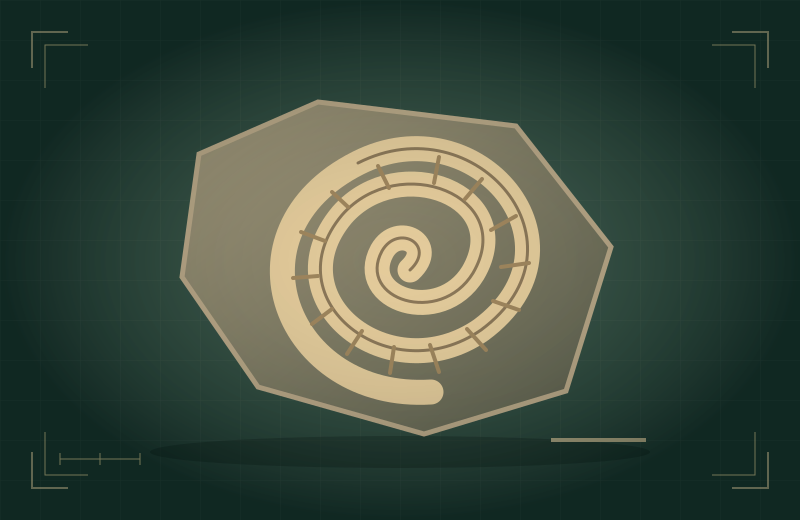
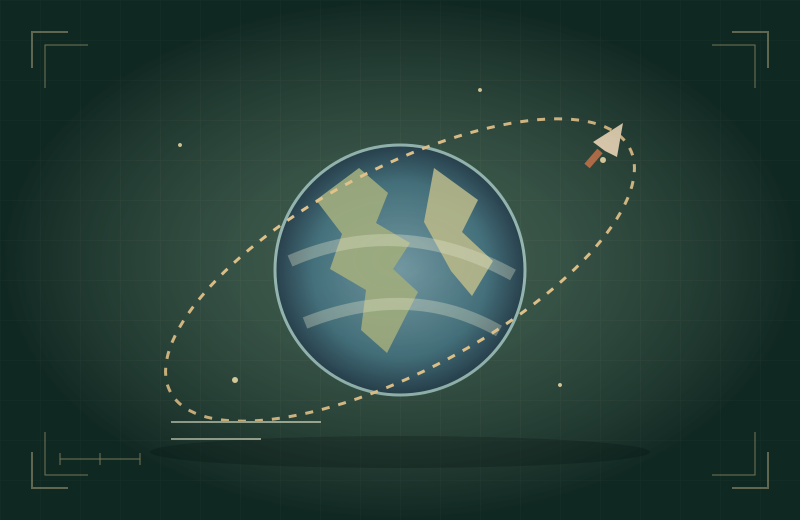
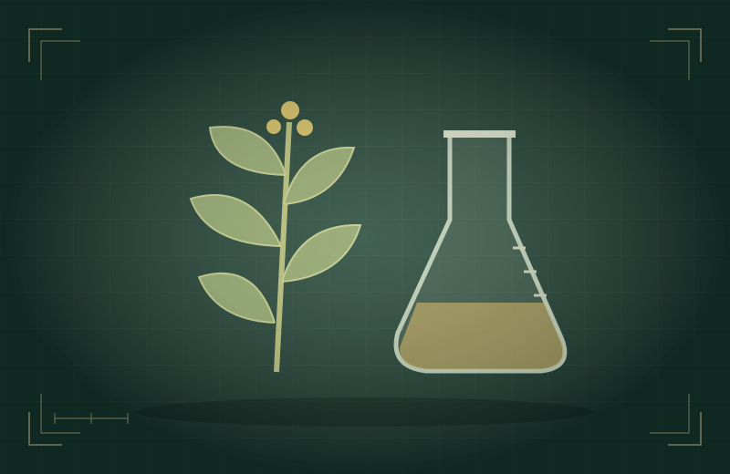
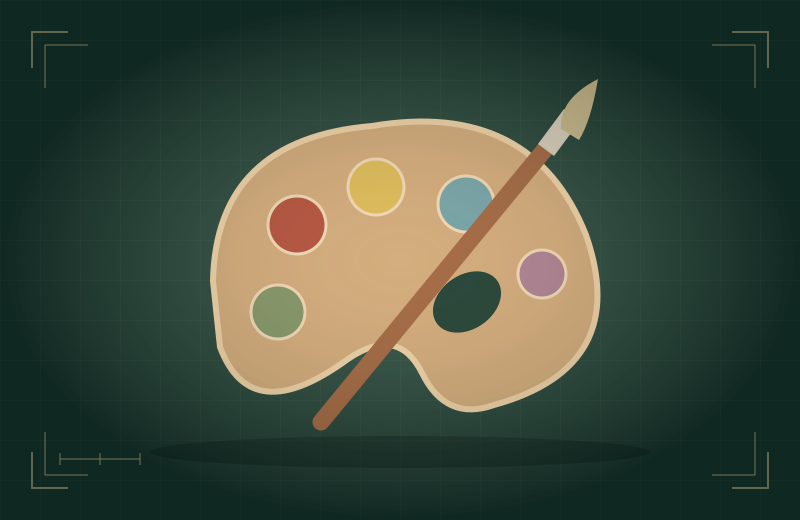

O NOME VEM DEPOIS DA DESCOBERTA
Primeiro,
a história.
Depois, ela.
Investigue objetos, conecte pistas e escolha quatro histórias para o seu museu. Quem está por trás delas?
10 vitrines · 3 etapas por história · 4 murais para revelar




ACERVO SEM NOMES.
HISTÓRIAS PARA DESCOBRIR.01 · Investigue
Observe, situe a história e conecte o impacto.
02 · Faça a curadoria
Reserve quatro histórias. Revele cada identidade em um passeio pelo museu.
SALA 01 / VITRINES MISTERIOSAS
O que chama sua atenção?
Abra uma vitrine. Encontre a conexão. Escolha pela história.
Uma pergunta para orientar seu olhar:
As missões mudam o foco da curadoria e a reflexão final. As atividades das vitrines são as mesmas.
SALA 02 / O FIO QUE CONECTA
Sua exposição tem uma ideia.
SALA 03 / UM PASSEIO POR HISTÓRIAS
0 de 4 murais revelados
Explore quatro históriasClique em um mural para caminhar até ele ou use as setas.
Teclado: W/S anda, A/D desloca e ←/→ gira. Abra cada cortina ao chegar. Você está na entrada.
Escolha um mural, caminhe até ele e abra a cortina.
Caminhando até o mural…
AS QUATRO HISTÓRIAS GANHARAM ROSTOS
Seu museu está aberto.
Quem ficou de fora? Que outra conexão mudaria a exposição?